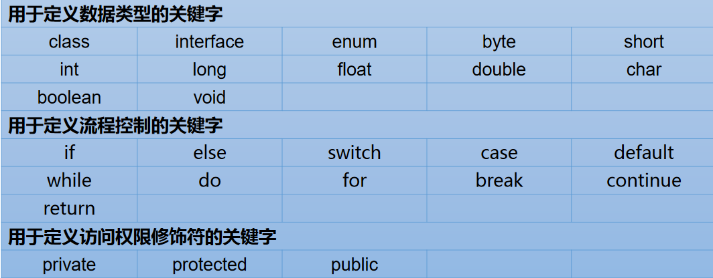
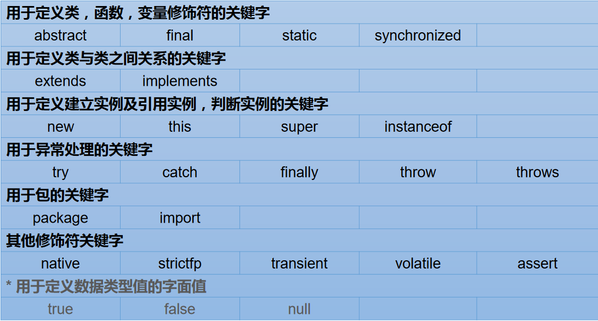
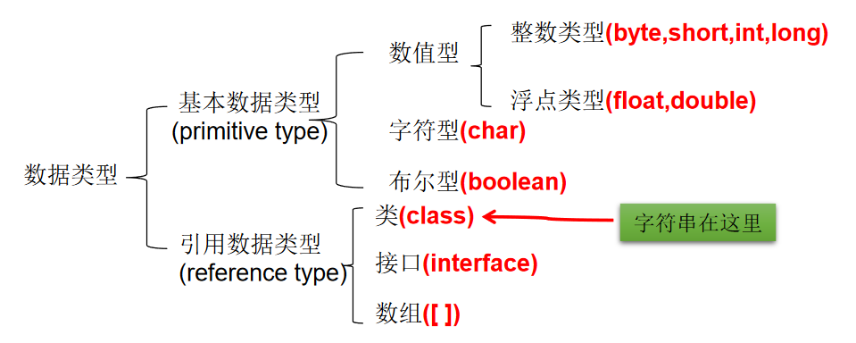
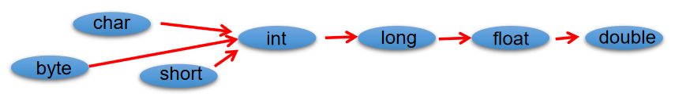
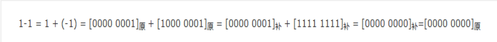
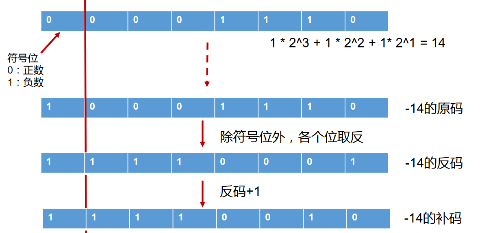
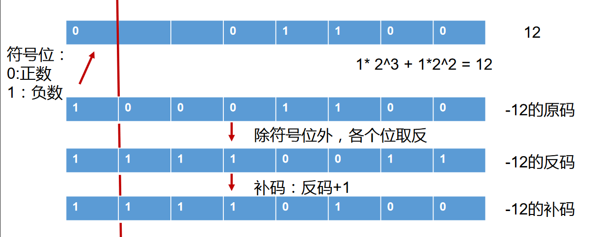
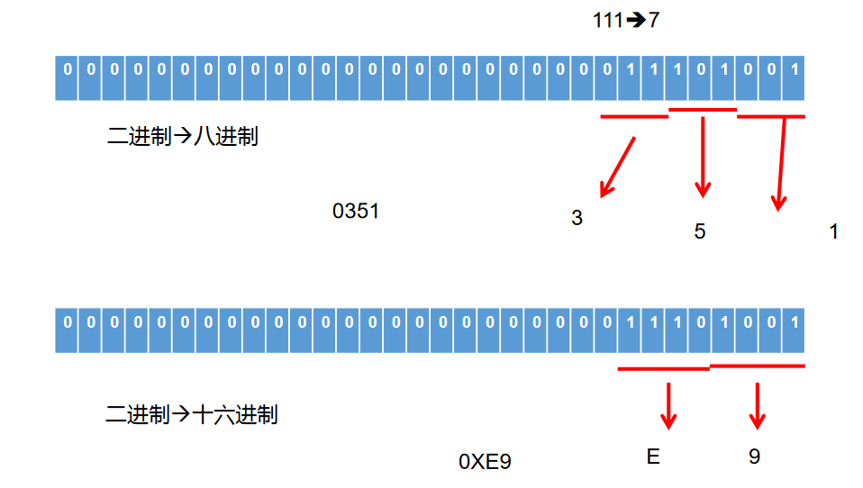
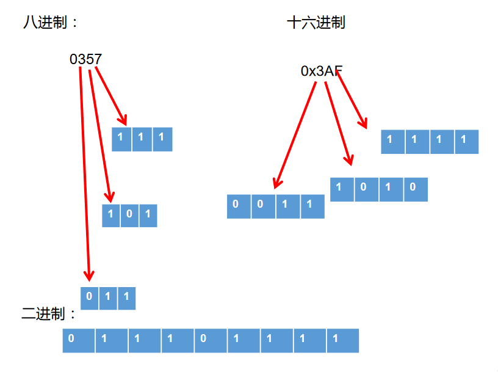

# 01、关键字与保留字
1、关键字 (keyword) 的定义和特点
- 定义：被 Java 语言赋予了特殊含义，用做专门用途的字符串（单词）
- 特点：关键字中所有字母都为小写
- 官方地址： https://docs.oracle.com/javase/tutorial/java/nutsandbolts/_keywords.html


2、保留字 (reserved word)
Java 保留字：现有 Java 版本尚未使用，但以后版本可能会作为关键字使用。自己命名标识符时要避免使用这些保留字 goto、const 。
# 02、标识符
# 2.1、什么是标识符（Identifier）
- Java 对各种变量、方法和类等要素命名时使用的字符序列称为标识符
- 技巧：凡是自己可以起名字的地方都叫标识符。
# 2.2、定义合法标识符规则【重要】
- 由 26 个英文字母大小写，0-9，_或 $ 组成
- 数字不可以开头。
- 标识符不能包含空格。
- 不可以使用关键字和保留字，但能包含关键字和保留字。
- Java 中严格区分大小写，长度无限制。
# 2.3、Java 中的名称命名规范
1、Java 中的名称命名规范：
- 包名：多单词组成时所有字母都小写：xxxyyyzzz
- 类名、接口名：多单词组成时，** 所有单词的首字母大写：**XxxYyyZzz
- 变量名、方法名：多单词组成时，第一个单词首字母小写，第二个单词开始每个单词首字母大写：xxxYyyZzz
- 常量名：所有字母都大写。多单词时每个单词用下划线连接：XXX_YYY_ZZZ
2、注意点
- 注意 1：在起名字时，为了提高阅读性，要尽量有意义，“见名知意”。
- 注意 2：java 采用 unicode 字符集，因此标识符也可以使用汉字声明，但是不建议使用。
- 更多细节详见《代码整洁之道》
第2章 有意义的命名 | |
2.1 介绍 | |
软件中随处可见命名。我们给变量、函数、参数、类和包命名。我们给源代码及源代码所在目录命名。 | |
这么多命名要做，不妨做好它。下文列出了取个好名字的几条简单规则。 | |
2.2 名副其实,见名知意 | |
变量名太随意，haha、list1、ok、theList 这些都没啥意义 | |
2.3 避免误导 | |
包含List、import、java等类名、关键字或特殊字； | |
字母o与数字0，字母l与数字1等 | |
提防使用不同之处较小的名称。比如：XYZControllerForEfficientHandlingOfStrings与XYZControllerForEfficientStorageOfStrings | |
2.4 做有意义的区分 | |
反面教材，变量名：a1、a2、a3 | |
避免冗余，不要出现Variable、表字段中避免出现table、字符串避免出现nameString，直接name就行，知道是字符串类型 | |
再比如：定义了两个类：Customer类和CustomerObject类，如何区分？ | |
定义了三个方法：getActiveAccount()、getActiveAccounts()、getActiveAccountInfo()，如何区分？ | |
2.5 使用读得出来的名称 | |
不要使用自己拼凑出来的单词，比如：xsxm(学生姓名)；genymdhms(生成日期，年、月、日、时、分、秒) | |
所谓的驼峰命名法，尽量使用完整的单词 | |
2.6 使用可搜索的名称 | |
一些常量，最好不直接使用数字，而指定一个变量名，这个变量名可以便于搜索到. | |
比如：找MAX_CLASSES_PER_STUDENT很容易，但想找数字7就麻烦了。 | |
2.7 避免使用编码 | |
2.7.1 匈牙利语标记法 | |
即变量名表明该变量数据类型的小写字母开始。例如，szCmdLine的前缀sz表示“以零结束的字符串”。 | |
2.7.2 成员前缀 | |
避免使用前缀，但是Android中一个比较好的喜欢用m表示私有等，个人感觉比较好 | |
2.7.3 接口和实现 | |
作者不喜欢把接口使用I来开头，实现也希望只是在后面添加Imp | |
2.8 避免思维映射 | |
比如传统上惯用单字母名称做循环计数器。所以就不要给一些非计数器的变量命名为：i、j、k等 | |
2.9 类名 | |
类名与对象名应该是名词与名词短语。如Customer、WikiPage、Account和AddressParser。避免使用Data或Info这样的类名。 | |
不能使动词。比如：Manage、Process | |
2.10 方法名 | |
方法名应当是动词或者动词短语。如postPayment、deletePage或save | |
2.11 别扮可爱 | |
有的变量名叫haha、banana | |
别用eatMyShorts()表示abort() | |
2.12 每个概念对应一个词 | |
项目中同时出现controllers与managers，为什么不统一使用其中一种？ | |
对于那些会用到你代码的程序员，一以贯之的命名法简直就是天降福音。 | |
2.13 别用双关语 | |
有时可能使用add并不合适，比例insert、append。add表示完整的新添加的含义。 | |
2.14 使用解决方案领域名称 | |
看代码的都是程序员，所以尽量用那些计算机科学术语、算法名、模式名、数学术语， | |
依据问题所涉领域来命名不算是聪明的做法。 | |
2.15 使用源自所涉问题领域的名称 | |
如果不能用程序员熟悉的术语来给手头的工作命名，就采用从所涉问题领域而来的名称吧。 | |
至少，负责维护代码的程序员就能去请教领域专家了。 | |
2.16 添加有意义的语境 | |
可以把相关的变量放到一个类中，使用这个类来表明语境。 | |
2.17 不要添加没用的语境 | |
名字中带有项目的缩写，这样完全没有必要。比如有一个名为“加油站豪华版”（Gas Station Deluxe）的项目， | |
在其中给每个类添加GSD前缀就不是什么好策略。 | |
2.18 最后的话 | |
取好名字最难的地方在于需要良好的描述技巧和共有文化背景。 |
# 03、变量
# 3.1、变量的声明与使用
1、变量的概念：
- 内存中的一个存储区域；
- 该区域的数据可以在同一类型范围内不断变化；
- 变量是程序中最基本的存储单元。包含变量类型、变量名和存储的值。
2、变量的作用：
- 用于在内存中保存数据。
3、使用变量注意：
- Java 中每个变量必须先声明，后使用；
- 使用变量名来访问这块区域的数据；
- 变量的作用域：其定义所在的一对 { } 内；
- 变量只有在其作用域内才有效；
- 同一个作用域内，不能定义重名的变量；
4、声明变量
- 语法：<数据类型> < 变量名称 >
- 例如：int var;
5、变量的赋值
- 语法：<变量名称> = < 值 >
- 例如：var = 10;
6、声明和赋值变量
- 语法：<数据类型>< 变量名 >= < 初始化值 >
- 例如：int var = 10
7、补充：变量的分类 - 按声明的位置的不同
在方法体外，类体内声明的变量称为成员变量。
在方法体内部声明的变量称为局部变量。


8、注意：二者在初始化值方面的异同:
- 同：都有生命周期
- 异：局部变量除形参外，需显式初始化。
8、注意：二者在初始化值方面的异同:
- 同：都有生命周期
- 异：局部变量除形参外，需显式初始化。
# 3.2、基本数据类型
2、变量的分类 - 按数据类型
对于每一种数据都定义了明确的具体数据类型（强类型语言），在内存中分配了不同大小的内存空间。

# 3.2.1、整数类型：byte、short、int、long
- Java 各整数类型有固定的表数范围和字段长度，不受具体 OS 的影响，以保证 java 程序的可移植性。
- java 的整型常量默认为 int 型，声明 long 型常量须后加‘l’或‘L’
- java 程序中变量通常声明为 int 型，除非不足以表示较大的数，才使用 long
| 类型 | 占用存储空间 | 表数范围 |
|---|---|---|
| byte | 1 字节 = 8bit 位 | -128 ~ 127 |
| short | 2 字节 | -2^15~ 2^15-1 |
| int | 4 字节 | -2^31~ 2^31-1 (约 21 亿) |
| long | 8 字节 | -2^63~ 2^63-1 |
- 1MB = 1024KB 1KB= 1024B B= byte ? bit?
- bit: 计算机中的最小存储单位。byte: 计算机中基本存储单元。
/* | |
Java 定义的数据类型 | |
一、变量按照数据类型来分： | |
基本数据类型： | |
整型：byte \ short \ int \ long | |
浮点型：float \ double | |
字符型：char | |
布尔型：boolean | |
引用数据类型： | |
类：class | |
接口：interface | |
数组：array | |
二、变量在类中声明的位置： | |
成员变量 vs 局部变量 | |
*/ | |
class VariableTest1{ | |
public static void main(String[] args) { | |
//1. 整型：byte (1 字节 = 8bit) short (2 字节） \ int (4 字节）\ long (8 字节) | |
//① byte 范围：-128 ~ 127 | |
byte b1 = 12; | |
byte b2 = -128; | |
// b2 = 128; // 编译不通过 | |
System.out.println(b1); | |
System.out.println(b2); | |
// ② 声明 long 型变量，必须以 “1” 或 “L” 结尾 | |
short s1 = 128; | |
int i1 = 12345; | |
long l1 = 345678586; | |
System.out.println(l1); | |
} | |
} |
# 3.2.2、浮点类型：float、double
- 与整数类型类似，Java 浮点类型也有固定的表数范围和字段长度，不受具体操作系统的影响。
- 浮点型常量有两种表示形式：
- 十进制数形式：如：5.12 512.0f .512 (必须有小数点）
- 科学计数法形式：如：5.12e2 512E2 100E-2
- float: 单精度，尾数可以精确到 7 位有效数字。很多情况下，精度很难满足需求。
- double: 双精度，精度是 float 的两倍。通常采用此类型。
- Java 的浮点型常量默认为 double 型，声明 float 型常量，须后加‘f’或‘F’。
| 类型 | 占用存储空间 | 表数范围 |
|---|---|---|
| 单精度 float | 4 字节 | -3.403E38 ~ 3.403E38 |
| 双精度 double | 8 字节 | -1.798E308 ~ 1.798E308 |
# 3.2.3、字符类型：char
- char 型数据用来表示通常意义上 “字符”(2 字节)
- Java 中的所有字符都使用 Unicode 编码，故一个字符可以存储一个字母，一个汉字，或其他书面语的一个字符。
- 字符型变量的三种表现形式：
- 字符常量是用单引号 (‘ ’) 括起来的单个字符。例如：char c1 = ‘a’; char c2 = ‘中’; char c3 = ‘9’;
- Java 中还允许使用转义字符‘\’来将其后的字符转变为特殊字符型常量。例如：char c3 = ‘\n’; //’\n’表示换行符
- 直接使用 Unicode 值来表示字符型常量：‘\uXXXX’。其中，XXXX 代表一个十六进制整数。如：\u000a 表示 \n。
- char 类型是可以进行运算的。因为它都对应有 Unicode 码。
/* | |
Java 定义的数据类型 | |
一、变量按照数据类型来分： | |
基本数据类型： | |
整型：byte \ short \ int \ long | |
浮点型：float \ double | |
字符型：char | |
布尔型：boolean | |
引用数据类型： | |
类：class | |
接口：interface | |
数组：array | |
二、变量在类中声明的位置： | |
成员变量 vs 局部变量 | |
*/ | |
class VariableTest1{ | |
public static void main(String[] args) { | |
//2. 浮点型：float (4 字节) \ double (8 字节) | |
//① 浮点型，表示带小数点的数值 | |
//② float 表示数值的范围比 long 还大 | |
double d1 = 12.3; | |
System.out.println(d1 +1); | |
// 定义 float 类型变量时，变量要以 "f" 或 "F" 结尾 | |
float f1 = 12.3F; | |
System.out.println(f1); | |
//② 通常，定义浮点型变量时，使用 double 变量 | |
//3. 字符型：char (1 字符 = 2 字节) | |
//① 定义 char 型变量，通常使用一对 '' | |
char c1 = 'a'; | |
// 编译不通过 | |
//c1 = 'AB'; | |
System.out.println(c1); | |
char c2 = '1'; | |
char c3 = '中'; | |
char c4 = '&'; | |
System.out.println(c2); | |
System.out.println(c3); | |
System.out.println(c4); | |
//② 表示方式：1. 声明一个字符；2. 转义字符；3. 直接使用 Unicode 值来表示字符型常量 | |
char c5 = '\n'; // 换行符 | |
c5 = '\t'; // 制表符 | |
System.out.print("hello" + c5); | |
System.out.println("world"); | |
char c6 = '\u0123'; | |
System.out.println(c6); | |
char c7 = '\u0043'; | |
System.out.println(c7); | |
} | |
} |
了解：ASCII 码
- 在计算机内部，所有数据都使用二进制表示。每一个二进制位（bit）有 0 和 1 两种状态，因此 8 个二进制位就可以组合出 256 种状态，这被称为一个字节（byte）。一个字节一共可以用来表示 256 种不同的状态，每一个状态对应一个符号，就是 256 个符号，从 0000000 到 11111111。
- ASCII 码：上个世纪 60 年代，美国制定了一套字符编码，对英语字符与二进制位之间的关系，做了统一规定。这被称为 ASCII 码。ASCII 码一共规定了 128 个字符的编码，比如空格 “SPACE” 是 32（二进制 00100000），大写的字母 A 是 65（二进制 01000001）。这 128 个符号（包括 32 个不能打印出来的控制符号），只占用了一个字节的后面 7 位，最前面的 1 位统一规定为 0。
- 缺点：
- 不能表示所有字符。
- 相同的编码表示的字符不一样：比如，130 在法语编码中代表了 é，在希伯来语编码中却代表了字母 Gimel (ג)。
了解：Unicode 编码
乱码：世界上存在着多种编码方式，同一个二进制数字可以被解释成不同的符号。因此，要想打开一个文本文件，就必须知道它的编码方式，否则用错误的编码方式解读，就会出现乱码。
Unicode：一种编码，将世界上所有的符号都纳入其中。每一个符号都给予一个独一无二的编码，使用 Unicode 没有乱码的问题。
Unicode 的缺点：Unicode 只规定了符号的二进制代码，却没有规定这个二进制代码应该如何存储：无法区别 Unicode 和 ASCII：计算机无法区分三个字节表示一个符号还是分别表示三个符号。另外，我们知道，英文字母只用一个字节表示就够了，如果 unicode 统一规定，每个符号用三个或四个字节表示，那么每个英文字母前都必然有二到三个字节是 0，这对于存储空间来说是极大的浪费。
Unicode 的缺点：Unicode 只规定了符号的二进制代码，却没有规定这个二进制代码应该如何存储：无法区别 Unicode 和 ASCII：计算机无法区分三个字节表示一个符号还是分别表示三个符号。另外，我们知道，英文字母只用一个字节表示就够了，如果 unicode 统一规定，每个符号用三个或四个字节表示，那么每个英文字母前都必然有二到三个字节是 0，这对于存储空间来说是极大的浪费。
了解：UTF-8
- UTF-8 是在互联网上使用最广的一种 Unicode 的实现方式。
- UTF-8 是一种变长的编码方式。它可以使用 1-6 个字节表示一个符号，根据不同的符号而变化字节长度。
- UTF-8 的编码规则：
- 对于单字节的 UTF-8 编码，该字节的最高位为 0，其余 7 位用来对字符进行编码（等同于 ASCII 码）。
- 对于多字节的 UTF-8 编码，如果编码包含 n 个字节，那么第一个字节的前 n 位为 1，第一个字节的第 n+1 位为 0，该字节的剩余各位用来对字符进行编码。在第一个字节之后的所有的字节，都是最高两位为 "10"，其余 6 位用来对字符进行编码。
# 3.3.4、布尔类型：boolean
- boolean 类型用来判断逻辑条件，一般用于程序流程控制：
- if 条件控制语句；
- while 循环控制语句；
- do-while 循环控制语句；
- for 循环控制语句；
- boolean 类型数据只允许取值 true 和 false，无 null。
- 不可以使用 0 或非 0 的整数替代 false 和 true，这点和 C 语言不同。
- Java 虚拟机中没有任何供 boolean 值专用的字节码指令，Java 语言表达所操作的 boolean 值，在编译之后都使用 java 虚拟机中的 int 数据类型来代替：true 用 1 表示，false 用 0 表示。———《java 虚拟机规范 8 版》
class VariableTest1{ | |
public static void main(String[] args) { | |
//4. 布尔型：boolean | |
//① 只能取两个值之一：true 、false | |
//② 常常在条件判断、循环结构中使用 | |
boolean bb1 = true; | |
System.out.println(bb1); | |
boolean isMarried = true; | |
if(isMarried){ | |
System.out.println("禁止入内！"); | |
}else{ | |
System.out.println("可以参观！"); | |
} | |
} | |
} |
# 3.3、基本数据类型转换
自动类型转换：容量小的类型自动转换为容量大的数据类型。数据类型按容量大小排序为：

有多种类型的数据混合运算时，系统首先自动将所有数据转换成容量最大的那种数据类型，然后再进行计算。
byte,short,char 之间不会相互转换，他们三者在计算时首先转换为 int 类型。
boolean 类型不能与其它数据类型运算。
当把任何基本数据类型的值和字符串 (String) 进行连接运算时 (+)，基本数据类型的值将自动转化为字符串 (String) 类型。
/* | |
基本数据类型之间的运算规则： | |
前提：这里讨论只是 7 中基本数据类型变量的运算。不包含 boolean 类型的。 | |
1. 自动类型提升： | |
当容量小的数据类型的变量和容量大的数据类型的变量做运算时，结果自动提升为容量大的数据类型。 | |
char、byte、short-->int-->long-->float-->double | |
特别的：当 byte、char、short 三种类型的变量做运算时，结果为 int 类型 | |
2. 强制类型转换： | |
说明：此时容量大小指的是，表示数的范围的大和小。比如：float 容量要大于 long 的容量 | |
*/ | |
class VariableTest2{ | |
public static void main(String[] args) { | |
byte b1 = 2; | |
int i1 = 129; | |
// 编译不通过 | |
// byte b2 = b1 + i1; | |
int i2 = b1 + i1; | |
long l1 = b1 + i1; | |
System.out.println(i2); | |
System.out.println(l1); | |
float f = b1 + i1; | |
System.out.println(f); | |
//*************** 特别的 ************************** | |
char c1 = 'a'; //97 | |
int i3 = 10; | |
int i4 = c1 + i3; | |
System.out.println(i4); | |
short s2 = 10; | |
// 编译错误 | |
// char c3 = c1 + s2; | |
byte b2 = 10; | |
// char c3 = c1 + b2; // 编译不通过 | |
// short s3 = b2 + s2; // 编译不通过 | |
// short s4 = b1 + b2; // 编译不通过 | |
} | |
} | |
class VariableTest4{ | |
public static void main(String[] args){ | |
//1. 编码情况 | |
long l = 123456; | |
System.out.println(l); | |
// 编译失败：过大的整数 | |
//long l1 = 452367894586235; | |
long l1 = 452367894586235L; | |
//************************** | |
// 编译失败 | |
// float f1 = 12.3; | |
//2. 编码情况 2: | |
// 整型变量，默认类型为 int 型 | |
// 浮点型变量，默认类型为 double 型 | |
byte b = 12; | |
// byte b1 = b + 1; // 编译失败 | |
// float f1 = b + 12.3; // 编译失败 | |
} | |
} |
# 3.3、字符串类型：String
- String 不是基本数据类型，属于引用数据类型
- 使用方式与基本数据类型一致。例如：String str= “abcd”;
- 一个字符串可以串接另一个字符串，也可以直接串接其他类型的数据。例如：
/* | |
String 类型变量的使用 | |
1. String 属于引用数据类型 | |
2. 声明 String 类型变量时，使用一对 "" | |
3. String 可以和 8 种基本数据类型变量做运算，且运算只能是连接运算；+ | |
4. 运算的结果任然是 String 类型 | |
*/ | |
class StringTest{ | |
public static void main(String[] args){ | |
String s1 = "Good Moon!"; | |
System.out.println(s1); | |
String s2 = "a"; | |
String s3 = ""; | |
// char c = ''; // 编译不通过 | |
//******************************* | |
int number = 1001; | |
String numberStr = "学号:"; | |
String info = numberStr + number; // 连接运算 | |
boolean b1 = true; | |
String info1 = info + true; | |
System.out.println(info1); | |
} | |
} |
练习 1
String str1 = 4; // 判断对错：no | |
String str2 = 3.5f + “”; // 判断 str2 对错：yes | |
System.out.println(str2); // 输出：”3.5” | |
System.out.println(3+4+“Hello!”); // 输出：7Hello! | |
System.out.println(“Hello!”+3+4); // 输出：Hello!34 | |
System.out.println(‘a’+1+“Hello!”); // 输出：98Hello! | |
System.out.println(“Hello”+‘a’+1); // 输出：Helloa1 |
# 3.4、强制类型转换
- 自动类型转换的逆过程，将容量大的数据类型转换为容量小的数据类型。使用时要加上强制转换符：()，但可能造成精度降低或溢出，格外要注意。
- 通常，字符串不能直接转换为基本类型，但通过基本类型对应的包装类则可以实现把字符串转换成基本类型。
- 如：
String a = “43”; inti= Integer.parseInt(a); boolean类型不可以转换为其它的数据类型。
练习 2
判断是否能通过编译
short s = 5; | |
s = s-2; // 判断：no | |
byte b = 3; | |
b = b + 4;// 判断：no | |
b = (byte)(b+4);// 判断：yes | |
char c = ‘a’; | |
int i = 5; | |
float d = .314F; | |
double result = c+i+d; // 判断：yes | |
byte b = 5; | |
short s = 3; | |
short t = s + b;// 判断：no |
# 04、进制
# 4.1、进制与进制间的转换
关于进制
- 所有数字在计算机底层都以二进制形式存在。
- 对于整数，有四种表示方式：
- 二进制 (binary)：0,1 ，满 2 进 1. 以
0b或0B开头。 - 十进制 (decimal)：0-9 ，满 10 进 1。
- 八进制 (octal)：0-7 ，满 8 进 1. 以数字
0开头表示。 - 十六进制 (hex)：0-9 及 A-F，满 16 进 1. 以
0x或0X开头表示。此处的 A-F 不区分大小写。如：0x21AF +1= 0X21B0
- 二进制 (binary)：0,1 ，满 2 进 1. 以
class BinaryTest{ | |
public static void main(String[] args){ | |
int num1 = 0b110; | |
int num2 = 110; | |
int num3 = 0127; | |
int num4 = 0x110A; | |
System.out.println("num1 = " + num1); | |
System.out.println("num2 = " + num2); | |
System.out.println("num3 = " + num3); | |
System.out.println("num4 = " + num4); | |
} | |
} |
# 4.2、二进制
- Java 整数常量默认是 int 类型，当用二进制定义整数时，其第 32 位是符号位；当是 long 类型时，二进制默认占 64 位，第 64 位是符号位
- 二进制的整数有如下三种形式：
- 原码：直接将一个数值换成二进制数。最高位是符号位
- 负数的反码：是对原码按位取反，只是最高位（符号位）确定为 1。
- 负数的补码：其反码加 1。计算机以二进制补码的形式保存所有的整数。
- 正数的原码、反码、补码都相同，负数的补码是其反码 + 1
为什么要使用原码、反码、补码表示形式呢？
计算机辨别 “符号位” 显然会让计算机的基础电路设计变得十分复杂！于是人们想出了将符号位也参与运算的方法。我们知道，根据运算法则减去一个正数等于加上一个负数，即: 1-1 = 1 + (-1) = 0 , 所以机器可以只有加法而没有减法，这样计算机运算的设计就更简单了。

二进制 ——》十进制

原码与反码是帮助推导出补码而存在的！！！

十进制 ——》二进制
- 对于正数来讲：原码、反码、补码是相同的：三码合一。
- 计算机底层都是使用二进制表示的数值。
- 计算机底层都是使用的数值的
补码保存数据的。
# 4.3、进制间转化
十进制二进制互转
- 二进制转成十进制乘以 2 的幂数
- 十进制转成二进制除以 2 取余数

